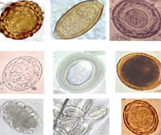

I parassiti intestinali sono una specie che dimora negli organismi viventi, nutrendosi delle sue sostanze nutritive ed influendo negativamente sul suo buon funzionamento. Nel tempo, ciò può causare seri danni, come acne, forti emicranie, alitosi, impotenza, disturbi del clclo mestruale e, perfino, tumori.
Per dare risposta alle numerose domande che ci pervengono a questo proposito, abbiamo deciso di interpellare la Dottoressa Caterina Grazioli Dottoressa in Parassitologia, che ha una grande esperienza nel campo, e, per essere più specifici, 40 anni di carriera.
In seguito a quanto discusso con la Dott.ssa Caterina Grazioli , riportiamo qui un’intervista su cosa significhi davvero avere i parassiti, quali complicazioni possano portare e come sbarazzarsene.
- Salve e grazie per aver accettato di rilasciare questa intervista. Mi sembra di capire che è la prima volta che lei parla pubblicamente di questo problema, del resto piuttosto gravoso.
- Salve, si in effetti è così, non ne avevo mai parlato al grande pubblico, prima.
- Vorrei cominciare col porle questa prima domanda: è vero che la maggior parte della popolazione è infestata dai parassiti?
 - Innanzitutto, vorrei definire meglio il termine “infestato”. Essere infestati dai parassiti significa essere contaminati da organismi viventi di dimensioni microscopiche, che vivono e si nutrono di sostanze per noi essenziali presenti nel nostro corpo, provocando tutta una serie di problemi.
“La maggior parte dei decessi viene provocata da infezioni parassitarie.”
- Lei vuol dire che ci sono dei parassiti che vivono, letteralmente, nel nostro corpo?
- Esattamente. Non voglio allarmare nessuno, ma, in realtà, il 90% dei decessi vengono causati da infezioni parassitarie.
- Quando parliamo di parassiti, ci riferiamo necessariamente ai vermi intestinali?
- Beh, come può immaginare, sull’argomento c’è poca chiarezza. I vermi sono solo uno dei tipi di parassiti, che si concentrano in organi specifici. I parassiti, al contrario, possono vivere nel cervello, nel fegato, nello stomaco, nell’intestino, in gola, e, spesso, la loro esistenza può provarsi fatale.
Vorrei anche far notare che quasi tutti siamo infestati dai parassiti ma che, in genere, lo scopriamo troppo tardi.
- Può parlarci di alcuni dei casi in cui ha riscontrato questo problema?
- Guardi, ne ho visti talmente tanti che potrei parlarne per giorni. L’ultima volta, due giorni fa, abbiamo eseguito un’operazione su un cuore nel quale abbiamo trovato almeno 300 diversi tipi di vermi. E non era certo un’evento eccezionale: ci troviamo davanti a casi del genere quasi ogni giorno. I disturbi più gravi da cui vengono colpite le persone , come attacchi di cuore, cancro ed epilessia possono essere causati dai parassiti. Ecco la foto di un cuore che si è fermato a causa proprio dei parassiti.
- In che modo veniamo infettati dai parassiti?
- Io dico sempre ai miei pazienti che i parassiti sono dappertutto e che, per evitare ogni contagio, dovrebbero vivere sotto una campana di vetro sterilizzata. Se dormite col vostro animale domestico, se mangiate una mela senza averla prima lavata, se consumate cibo che avrete tenuto troppo a lungo in frigo, potreste venire infettati dai parassiti
- Quali sono i possibili sintomi?
- I sintomi di un’infezione parassitaria sono, in genere:
- Alito cattivo (alitosi);
- Allergie (irritazioni, lacrimazione eccessiva, rinite);
- Irritazione e rossori della pelle;
- Raffreddore, gola irritata, congestione nasale;
- Affaticamento cronico (quando ci si sente sempre stanchi, a prescindere da cosa si faccia);
- Mal di testa frequenti;
- Stitichezza o diarrea;
- Dolori muscolari ed alle giunture;
- Irritabilità, insonnia e disturbi dell’appetito;
- Occhiaie, borse sotto agli occhi.
Se notate anche uno solo di questi sintomi, c’è il 99% delle possibilità che siate infestati dai parassiti. In questo caso, dovrete sbarazzarvene quanto prima!
- Come possiamo eliminarli?
- In termini medici, c’è poco da fare, per ora. C’è solo un modo per
liberarsi dai parassiti.
C’è solo un modo per liberarsi dai parassiti, si chiama "" -
Si tratta di un prodotto rivoluzionario, molto apprezzato negli
Stati Uniti, e che da poco è conosciuto anche in Italia.
Personalmente ritengo sia una vera e propria innovazione nel
campo della Parassitologia, perché contiene solo ingredienti
naturali, accuratamente selezionati, e che hanno un effetto
curativo immediato.
Estratto di Apium graveolens, che elimina tutti i
parassiti dall’organismo, Estratto di frutti di Phyllanthus
emblica, che svolge un’azione antinfiammatoria ed
anticoagulante Estratto di foglie di Centella asiatica (gothu
kola) e di radice di Curcuma longa che ristabiliscono
la flora intestinale.
Vorrei anche parlare dei risultati dei test fatti in laboratorio riguardo questo rimedio, il .
L’efficacia di è stata testata su un campione di 300 persone di età compresa trai i 15 ed i 60 anni. Dai nostri test è risultato che:
- i vermi e le loro uova sono stati eliminati completamente, con una percentuale di successo del 100%;
- le dermatiti allergiche sono guarite (al 90%);
- l’alitosi è del tutto sparita (100%);
- l’anemia è stata guarita (100%);
- i i disturbi dello stomaco, quali gastriti ed ulcere, sono stati perlopiù curati (90%).
Vorrei far notare che, in nessuno dei casi studiati, sono stati riscontrati effetti collaterali dopo la somministrazione di e mi auguro che presto queste capsule siano disponibili nelle farmacie di tutto il paese.
- Credo che, a questo punto, i nostri lettori sarebbero interessati a sapere dove comprare .
- È possibile ordinarlo sul sito ufficiale del produttore. Se doveste trovarlo su un sito diverso da questo, è probabile si tratti di una contraffazione, una specie di “copia”, che non vi darà i risultati sperati.
- Dott.ssa Grazioli, c’è qualcos’altro che vuole far sapere ai nostri lettori, prima di concludere?
- Vorrei lasciarli con un consiglio: prendetevi cura di voi stessi e dell’ambiente che vi circonda. Inoltre, vorrei raccomandare loro di inserire nella loro dieta , perché molti non sanno quanto possa essere benefica per l’organismo una cura disintossicante e quanti agenti patogeni possano essere eliminati con l’assunzione di queste capsule.
Le mie analisi del sangue erano davvero pessime, il mio dottore mi ha raccomandato una dieta che include e, nel giro di un mese, tutti i miei problemi sono spariti.
Questo supplemento mi ha aiutata moltissimo, ha curato tutte le mie allergie. Le analisi del sangue mostravano che avevo dei parassiti localizzati nella gola, ma con , ora sono storia antica.
Il mio alito diventava più cattivo ogni giorno, io credevo di avere un problema alla gola, ma, in realtà, si trattava di parassiti intestinali. Dopo un mese e mezzo di questa cura, li ho eliminati tutti.
Ottimo!!! Lo raccomando.
Questo prodotto mi ha veramente soddisfatta, l’ho consigliato a tutti i miei amici.
Mi sono sbarazzata definitivamente dei parassiti!!! Non riesco a crederci:).
Una rivoluzione in campo medico!!!
L’acne mi è venuta da adolescente e, negli anni, non è sparita, fino a quando non ho scoperto che era causata dai parassiti. Poi, finalmente, ho eliminato tutti i miei problemi con .
Il miglior integratore sul mercato!!!